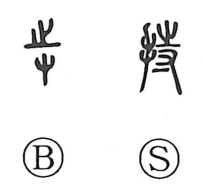

持

Kun: motsu, tamotsu | On: ji
to hold ・ to have ・ to keep ・ to maintain
Explanation
持 is a phono-semantic character: the hand element points to the act of grasping, while 寺 provides the on reading ji and originally carried the sense of holding or possessing and of maintaining a state. From that base, 持 denotes holding something in the hand and, by extension, keeping or sustaining it—hence the kun readings motsu “to hold” and tamotsu “to keep up.” The same idea of ongoing continuance expressed by 寺 appears in 時 “time,” where it describes continuity in the temporal realm.